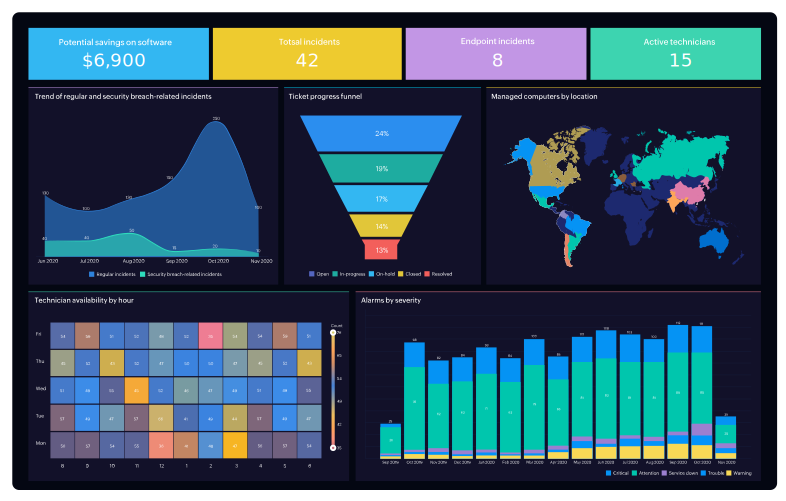
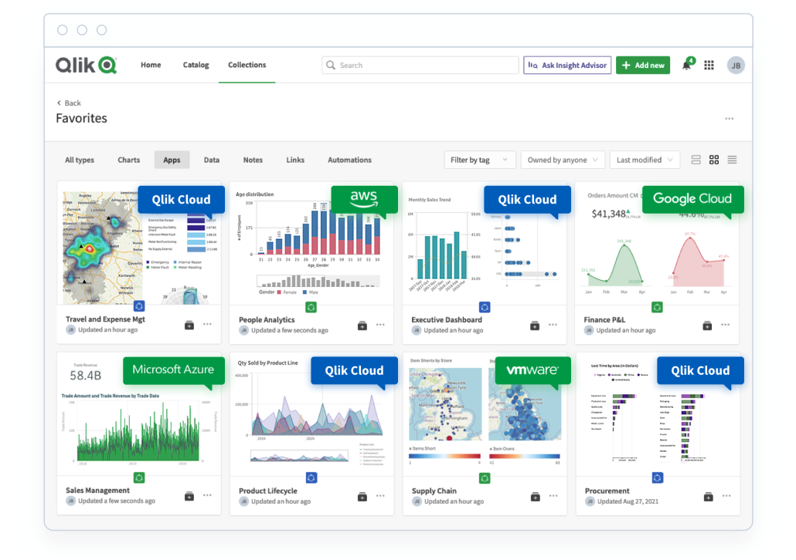
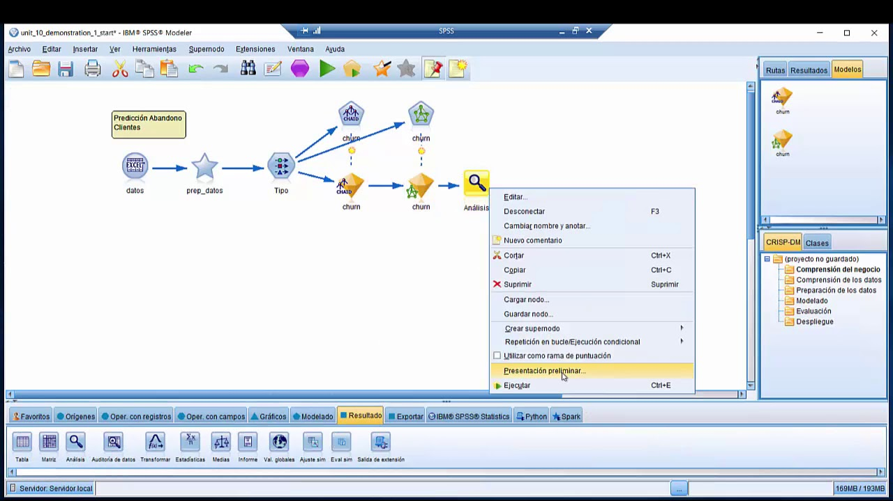
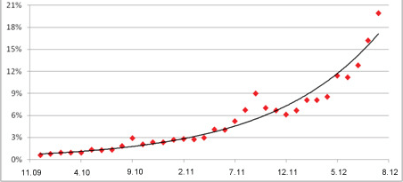
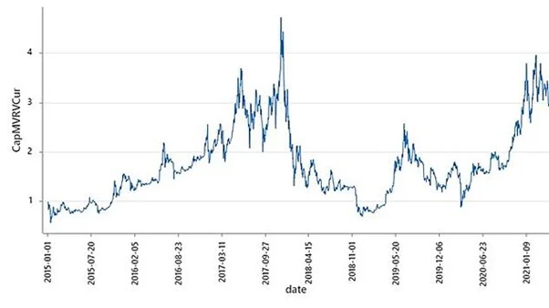
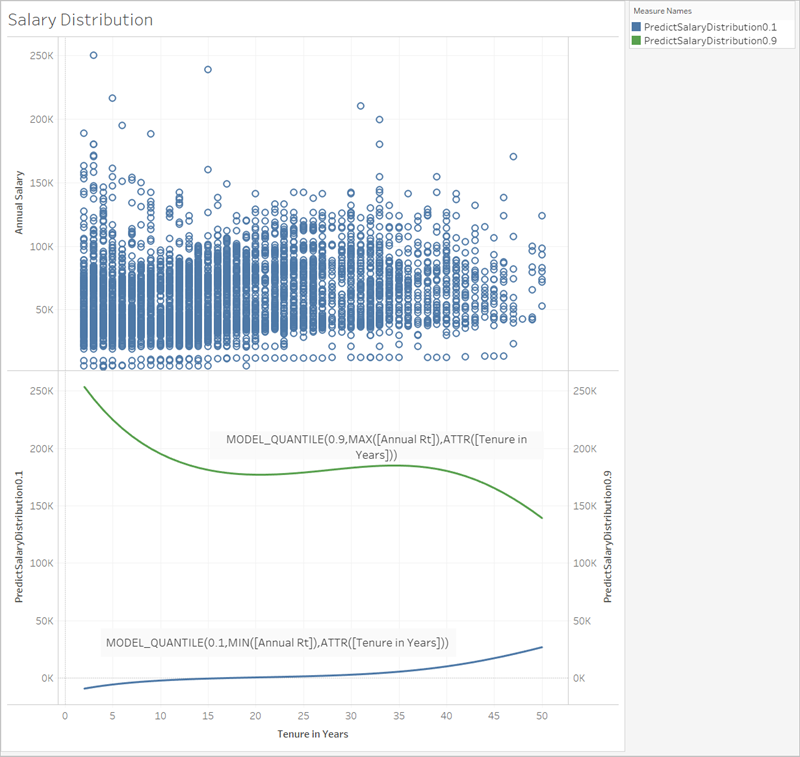
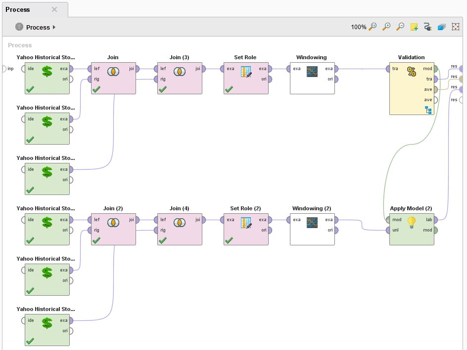
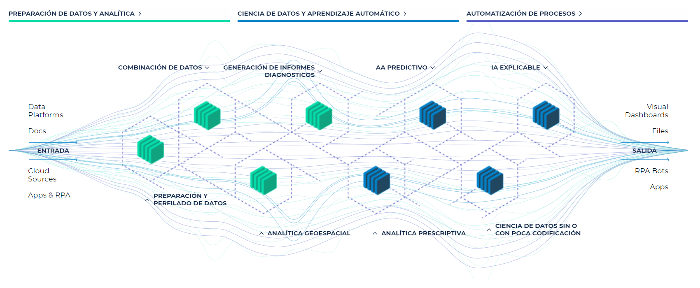

La analítica predictiva es una forma avanzada de análisis que, mediante el estudio de los datos, nos ofrece probabilidades futuras.
Se usa principalmente en las empresas, ya que les permite basar sus tomas de decisiones pasadas para aumentar las probabilidades de éxito y tener mejores resultados.
A día de hoy, es muy común ver herramientas de análisis predictivo basadas en Inteligencia Artificial, lo que permite reducir los errores y la carga de trabajo manual al equipo.
Algunos ejemplos son:
1. - Hubspot
Almacena la información de todos los clientes en la plataforma para su uso futuro en las estrategias y llegar más y mejor a las personas.
2.- ManageEngine Analytics Plus
Es capaz de detectar posibles problemas antes de que sucedan para que el equipo las aborde con tiempo, antes de que sea tarde y predice las cargas de trabajo que suponen los clientes entre una gran cantidad de datos para que la empresa pueda administrar sus recursos de forma cada vez más eficiente.

3.- Qlik Sense
Capacita a los equipos de todos los niveles de la empresa para que tomen decisiones basadas en datos y puedan realizar mejores acciones.

4.- IBM SPSS
Ayuda a las empresas a través de explicaciones numéricas de los hechos, consta de un aprendizaje automático.

5.- SAP
Especializado en el seguimiento de los productos en las etapas de la cadena de suministros. Crea informes a través de la IA y no es necesario ser un experto para utilizarla.

6.- Minitab
Aporta grandes conocimientos, así como algoritmos de aprendizaje automático de su tipo. Es muy versátil, pues puede ser usado por cualquiera, es decir, desde expertos en la rama hasta principiantes.

7.- TIBCO
Hace analítica predictiva a partir de la información obtenida por diferentes herramientas de integración. Dos opciones:
-TIBCO Streaming: toma decisiones en tiempo real y se basa en un conjunto de eventos temporales.
-TIBCO Spotfire: integra datos que están basados en la localización con resultados históricos para crear cuadros de mando.

8.- RapidMiner
Usado principalmente para científicos de datos de primer nivel. Permite experimentar con flujos de datos y encontrar las mejores opciones.

9.- Futrli
Consigue pronósticos precisos sobre ventas, personal, tendencias comerciales, operaciones, ingresos, etc. Está especializada en empresas de contabilidad y ofrece tres tipos de predicciones:
-Pronóstico repetitivo.
-Pronóstico de estilo libre.
-Pronóstico de unidades.
No solo nos indica lo que pasará con mayor probabilidad, sino también lo que no.
10.- Alteryx
Pensada para organizaciones de alto nivel que quieran dejar de perder tiempo procesando datos y centrarse en información de valor que impulse su negocio.
